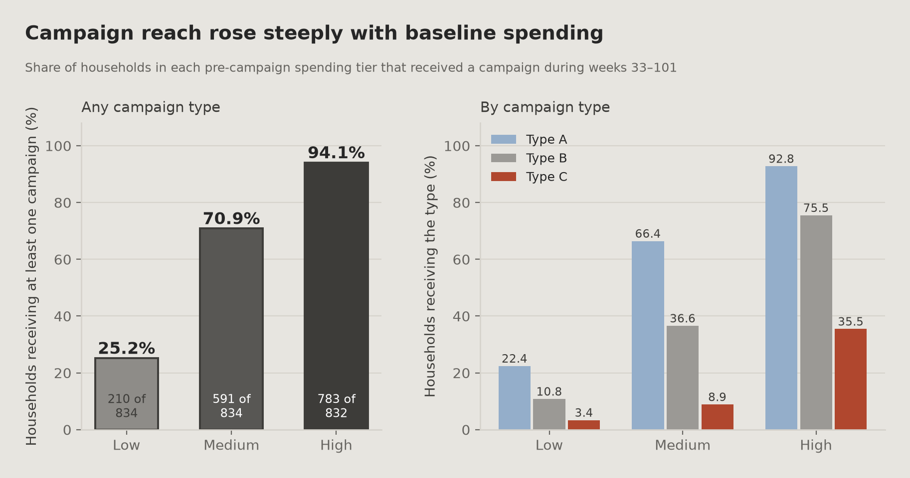
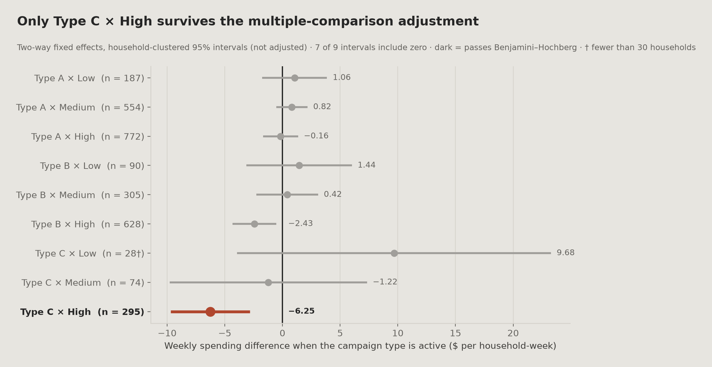
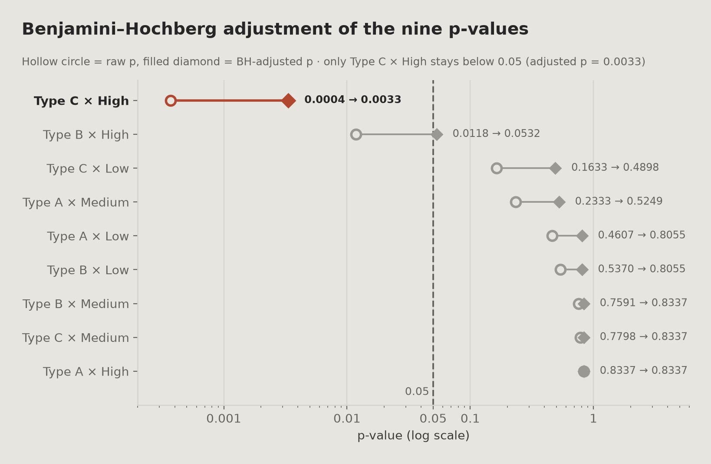
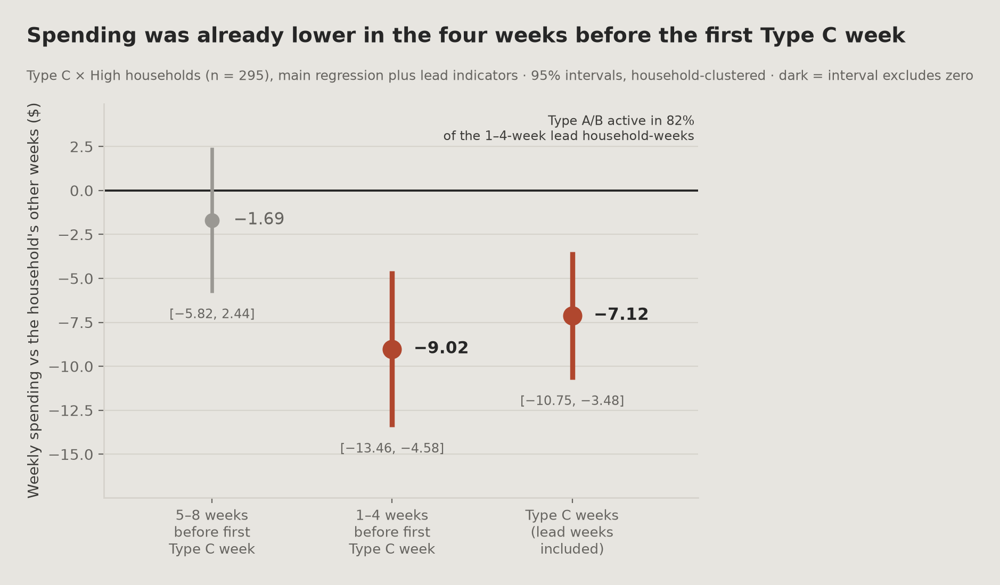

00
요약
질문, 방법, 결과를 짧게
캠페인은 고지출 가구의 94.1%에 닿았지만 저지출 가구에는 25.2%에만 닿았습니다. 가구를 고정하지 않은 비교는 누가 캠페인을 받았는지의 차이와 캠페인에 대한 반응을 한데 섞습니다.
단순 비교와 고정효과 추정치는 서로 다른 값입니다
단순 비교 (캠페인 유형 하나라도 진행 vs 없음, 통제 없음, 가구-주 단위):
| 기준 등급 | 조용한 주 (n) | 진행 주 (n) | 단순 비교 차이 |
|---|---|---|---|
| 저지출 | $11.54 (54,622) | $39.49 (2,924) | +242% |
| 중간 지출 | $22.48 (45,887) | $36.08 (11,659) | +60% |
| 고지출 | $61.68 (31,960) | $75.61 (25,448) | +23% |
두 표는 다른 질문에 답합니다. 첫 번째 표는 모든 캠페인 유형을 합쳐 비교하고, 두 번째 표는 한 유형을 그 가구 자신의 다른 주와 비교합니다. 따라서 두 번째 표는 첫 번째 표를 보정한 값이 아닙니다.
가구·주 고정효과 (유형 × 등급 지시변수 9개를 한 회귀에서 함께 추정. 각 값은 같은 가구의 다른 주와 비교한 것이며, 다른 캠페인 유형의 진행 여부는 통제됨):
| 조합 | β ($/주) | 보정 전 p | 가구 수 | 해석 |
|---|---|---|---|---|
| TypeC × 고지출 | −6.25 ($72.75의 약 −8.6%) | 0.0004 | 295 | BH 보정 통과 (보정 p = 0.0033) |
| TypeB × 고지출 | −2.43 | 0.0118 | 628 | 통과 못 함 (보정 p = 0.0532) |
| TypeC × 저지출 | +9.68 | 0.1633 | 28 | 유의하지 않음 |
| TypeA / TypeB × 저지출 | +1.06 / +1.44 | 0.4607 / 0.5370 | 187 / 90 | 유의하지 않음 |
표에 없는 조합: TypeA × 고지출(β −0.16, 보정 전 p 0.8337)과 중간 지출 세 유형(보정 전 p 0.2333 / 0.7591 / 0.7798)은 모두 유의하지 않습니다. 캠페인 도달률은 고지출 등급 94.1%, 저지출 등급 25.2%였습니다.
주요 결과
등급 × 유형 조합 9개 중 정확히 1개만 다중비교 보정을 통과합니다. TypeC × 고지출, β = −6.25, BH 보정 p = 0.0033, 가구 295개.
통과한 추정치는 음수입니다. TypeC를 받은 고지출 가구 295개에서, TypeC 주의 지출은 같은 가구의 다른 주보다 약 $6.25(고지출 등급의 캠페인 전 주간 평균 $72.75의 약 8.6%) 낮습니다. 효과가 아니라 연관입니다.
표준오차를 군집화하면 F 통계량이 낮아집니다. 모형 F 통계량은 군집화 없이 11.544, 군집화하면 2.313이므로, 군집화하지 않은 표준오차는 유의성을 과장합니다.
노출 직전에 이미 지출이 낮았습니다. TypeC를 받은 고지출 가구 295개에서, 처음 TypeC를 받기 전 4주의 지출은 그 가구의 다른 주보다 주당 $9.02 낮았습니다(95% CI −13.46 ~ −4.58). 5~8주 전에는 차이가 보이지 않았습니다.
보고 방식
확정된 효과가 아니라 통계적 연관
TypeC × 고지출 결과는 다중비교 보정을 통과하고, 첫 노출과 반복 노출로 나눠도 보정 전 p값이 유의하게 남습니다(이 두 검정은 BH 묶음에 포함되지 않음). 다만 이것이 캠페인에 대한 반응인지 타기팅 결정인지 구분할 수 없었고, 이 295개 가구는 노출 전 4주에 이미 지출이 낮았습니다. 그래서 연관으로만 보고합니다.
한눈에 보기
01
개요
무엇을 쟀고, 왜 단순 비교를 효과로 읽지 않는가
한 소매업체가 약 70주(33~102주)에 걸쳐 캠페인 30개를 진행하고, 어떤 고객이 반응하는지 알고 싶어 합니다. 가장 간단한 분석은 캠페인이 진행된 주와 진행되지 않은 주의 지출을 비교하는 것입니다. 이 단순 비교를 고객 등급별로 나누면 큰 차이가 나오고, 특히 가장 낮은 등급에서 큽니다.
이 비교는 캠페인 효과로 읽을 수 없습니다. 타기팅이 지출과 강하게 관련되어 있었기 때문입니다. 캠페인은 고지출 가구의 94.1%, 저지출 가구의 25.2%에 닿았으므로, 등급 간 비교에는 행동 반응뿐 아니라 어떤 가구가 캠페인을 받았는지가 함께 반영됩니다.
접근
이 분석은 첫 캠페인 전에 기준 등급을 고정하고, 가구·주 고정효과를 넣고, 표준오차를 가구 단위로 군집화하고, 다중비교를 보정해서 관찰 비교를 해석 가능하게 만듭니다. 그래도 인과 질문은 열려 있으므로 결과는 연관으로 보고합니다.
범위
이 페이지는 Dunnhumby 데이터의 캠페인 × 등급 분석을 다룹니다. 팀원들이 가설을 나눠 맡은 팀 프로젝트에서 출발했고, 사전 효과(lead-effect) 검정과 단일 출처 파이프라인은 팀 프로젝트 이후에 추가했습니다.
핵심 결과: 캠페인 하나라도 진행된 주를 합쳐 본 단순 비교에서는 모든 등급에서 진행 주의 지출이 더 높습니다. 반면 다른 질문(캠페인 유형 하나 × 등급을 그 가구 자신의 다른 주와 비교)에 답하는 가구 단위 추정에서는 어떤 등급의 어떤 캠페인 유형도 유의하게 양수가 아닙니다.
02
비즈니스 질문
연구 질문과 등급 정의
가구의 기준 지출 등급에 따라 캠페인 반응이 다른가?
구체적으로: 캠페인이 진행될 때 가구의 주간 지출이 움직이는가, 그리고 그 움직임이 캠페인 시작 전 그 가구가 저·중·고지출 가구였는지에 따라 달라지는가?
등급 정의의 순환성 순환 논리
캠페인 기간 데이터로 등급을 정의하면 분석에 이런 고리가 생깁니다: 캠페인 진행 → 지출 증가 → 고지출 가구로 분류 → "고지출 가구가 캠페인 기간에 더 썼다."
이 결론은 캠페인이 아무 효과가 없어도 나옵니다. 그래서 등급은 첫 캠페인 전에 고정했고 다시 계산하지 않았습니다.
등급 기간
17~32주
첫 캠페인
33주
겹침
없음
검정한 조합
9
03
데이터
패널 구성, 기준 등급, 겹치는 노출
출처
Dunnhumby "The Complete Journey": 가구 거래 기록과 캠페인 발송 기록. 첫 캠페인 시작 이후인 33~101주를 덮는 균형 가구 × 주 패널로 재구성했습니다. 102주는 제외했습니다. 데이터가 711일째에 끝나서 그 주에는 6일치 거래만 있기 때문입니다.
데이터는 교육용 포트폴리오 목적으로 사용했습니다. 이 페이지는 팀원들이 가설을 나눠 맡은 팀 프로젝트에서 출발한 캠페인 × 등급 분석을 다룹니다.
기준 등급: 캠페인 전 17~32주로 고정
| 등급 | 가구 수 | 주간 평균 지출 | 범위 |
|---|---|---|---|
| 저지출 | 834 | $3.85 | $0.00 – $10.03 |
| 중간 지출 | 834 | $20.36 | $10.05 – $33.88 |
| 고지출 | 832 | $72.75 | $33.88 – $378.60 |
5개가 아닌 3개 등급. 가구를 지출 5분위로도 나눠 캠페인 유형별 가구 수를 셌습니다. Type C 칸 두 개가 30가구 기준에 못 미쳐서(1분위 16, 2분위 25) 고정효과 모형은 3개 등급으로만 추정했습니다. 5분위 모형은 돌리지 않았습니다. 3개 등급에서도 Type C × 저지출은 28가구로 기준에 약간 못 미칩니다.
142개 가구(5.7%)는 등급 기간에 거래가 전혀 없어 $0으로 두었고, 그래서 저지출 등급에 들어갔습니다. 기록된 활동이 없는 가구는 활동하는 저지출 가구와 다르게 행동할 수 있으므로 바닥 효과가 생길 수 있습니다.
겹치는 캠페인 노출과 다중공선성 점검 통과
캠페인 유형을 둘 이상 받은 1,008개 가구 중 86.2%는 두 유형 이상이 동시에 진행된 주가 적어도 한 번 있었습니다. 이는 상호작용 항 사이에 다중공선성을 일으킬 수 있습니다.
VIF는 상호작용 더미 9개 모두에서 1.02~1.12였습니다. 동시에 진행된 행은 172,500행 패널의 4.1%뿐이고 나머지 95.9%가 상관을 희석하기 때문에 값이 낮게 나온 것으로 보입니다. 여러 유형을 받은 가구에서는 겹침이 흔했지만, 진단 결과 다중공선성 문제는 보이지 않았습니다.
04
식별 전략
네 가지 설계: 캠페인 전 등급, 가구·주 고정효과, 군집 표준오차
① 캠페인 시작 전에 기준 등급 고정
17~32주만 쓰고 첫 캠페인은 33주에 시작하므로 겹침이 없습니다. 02장의 규칙(캠페인 기간 데이터로 등급을 정의하지 않는다)을 구현한 것입니다.
② 가구 고정효과
각 가구를 캠페인 주와 조용한 주에서 자기 자신과 비교합니다. 가구 간 평균 지출의 고정된 차이("이 가구는 원래 더 쓴다")가 제거되며, 이것이 단순 비교를 효과로 읽을 수 없는 이유 중 하나입니다.
③ 주 고정효과
크리스마스, 추수감사절 같은 달력 효과는 모든 가구에 동시에 영향을 줍니다. 주 고정효과가 이를 흡수해서 계절성을 캠페인 반응으로 오인하지 않게 합니다.
④ 가구 단위 군집 표준오차
69주 반복 관측 패널에는 가구 안에서 계열 상관이 있습니다. 일반 표준오차는 이를 무시해 p값을 작게 잡습니다.
F 통계량: 군집화 없음 11.544 (p < 0.0001) · 군집화 2.313 (p = 0.0135)
군집화의 효과. 군집화하면 F 통계량이 낮아지므로, 군집화하지 않은 표준오차는 유의성을 과장합니다.
모형
spend ~ Σ(campaign type × baseline tier) + household fixed effects + week fixed effects clustered SE at household level
05
분석
단순 비교, 고정효과 모형, 다중비교 보정, 노출 이력 점검
A · 단순 비교
등급마다 가구-주 관측치를 그 주에 캠페인(세 유형 중 하나라도)이 진행됐는지로 나누고, 가구·주 고정효과 없이 두 평균을 비교했습니다.
| 등급 | 조용한 주 (n) | 진행 주 (n) | 단순 비교 차이 |
|---|---|---|---|
| 저지출 | $11.54 (54,622) | $39.49 (2,924) | +242% |
| 중간 지출 | $22.48 (45,887) | $36.08 (11,659) | +60% |
| 고지출 | $61.68 (31,960) | $75.61 (25,448) | +23% |
그대로 읽으면 캠페인 효과가 등급마다 달라서 저지출 가구가 고지출 가구보다 몇 배 더 늘어난 것처럼 보입니다. 데이터의 두 가지 특징 때문에 그렇게 읽을 수 없습니다.
가구를 섞어서 비교합니다. 같은 등급 안에서도 캠페인을 받은 가구와 받지 않은 가구가 애초에 다른 가구일 수 있으므로, 누가 캠페인을 받는지의 선택이 비교에 남아 있습니다.
저지출 등급은 진행 주 표본이 작습니다. 저지출 등급의 가구-주 57,546개 중 캠페인 진행 주는 2,924개(5.1%)뿐이고, 고지출 등급은 57,408개 중 25,448개(44.3%)입니다. 가구 단위 도달률(25.2% vs 94.1%)도 같은 방향입니다.

B · 고정효과 모형
각 가구를 자기 자신과 비교하고 달력 효과를 흡수하면, 9개 조합 중 2개가 보정 전 p값 0.05 미만이며 둘 다 고지출 등급입니다.
| 조합 | β | p | 가구 수 | 상대 크기 |
|---|---|---|---|---|
| TypeC × 고지출 | −6.25 | 0.0004 | 295 | 고지출 등급 기준값($72.75/주)의 약 −8.6% |
| TypeB × 고지출 | −2.43 | 0.0118 | 628 | 고지출 등급 기준값($72.75/주)의 약 −3.3% |
상대 크기 = 계수 ÷ 고지출 등급의 17~32주 주간 평균 지출($72.75).
두 비교는 서로 다른 값을 추정합니다. 단순 비교는 캠페인 유형을 가리지 않고, 고정효과 모형은 특정 유형이 진행된 주를 그 가구 자신의 다른 주와 비교합니다. 유형 × 등급 지시변수 9개를 한 회귀에서 함께 추정하므로 다른 유형의 진행 여부는 통제됩니다. 고정효과에서 고지출 등급은 TypeB와 TypeC 추정치가 음수이고, 저지출 등급 추정치 세 개는 하나도 0과 구분되지 않습니다(가장 작은 보정 전 p = 0.163, TypeC × 저지출, 가구 28개). 한 집단에서 고정효과가 무엇을 바꾸는지 보이려면 등급마다 '캠페인 하나라도' 지시변수 하나를 둔 모형이 필요한데, 그 모형은 추정하지 않았습니다.
모형 내 R² 0.0004는 낮습니다. 캠페인은 가구 안의 주간 지출 변동을 거의 설명하지 못하지만, 관측치가 172,500개라서 작은 신호도 잡힐 수 있습니다. 풀링 가능성 F 검정(38.138, p < 0.0001)은 고정효과를 고려해야 함을 지지합니다.

C · 다중비교 보정
조합 9개를 한꺼번에 검정하면 거짓 양성 가능성이 커지므로 Benjamini-Hochberg 거짓 발견률(FDR) 통제를 적용했습니다.
| 순위 | 조합 | 보정 전 p | BH 기준값 | 판정 |
|---|---|---|---|---|
| 1 | TypeC × 고지출 | 0.000371 | 0.00556 | 통과 |
| 2 | TypeB × 고지출 | 0.011832 | 0.01111 | 탈락 |
TypeB는 BH 기준값을 근소하게 넘지 못합니다. 보정을 통과하지 못했으므로 결과로 보고하지 않고 탐색적 신호로 다룹니다.

D · 노출 이력 점검: 첫 노출 vs 반복 노출
캠페인 30개가 70주(33~102주, 분석 패널은 33~101주)에 걸쳐 진행되면서 서로 다른 시점에 켜지고 꺼지므로, 앞선 캠페인에 이미 노출된 가구의 주가 뒤 캠페인의 비교 주로 쓰일 수 있습니다. 이는 도입 시점이 엇갈리는 이원 고정효과 설계에서 알려진 편향 원인입니다. 다만 이 패널은 교과서적인 엇갈린 도입(staggered adoption) 사례는 아닙니다.
| 노출 이력 | 가구 수 | β | 보정 전 p |
|---|---|---|---|
| 첫 노출 | 295 | −4.89 | 0.009 |
| 반복 노출 | 131 | −9.09 | 0.003 |
두 수는 포함 관계이며 더하는 값이 아닙니다. 295는 고지출 등급 TypeC 수신 가구 전체이고, 그중 131개는 TypeC를 서로 떨어진 두 기간 이상(기간 = 연속된 진행 주) 받았으며 나머지 164개는 한 기간만 받았습니다. 같은 가구의 주 단위 관측치를 나눈 것이므로 둘을 더하면 중복으로 셉니다.
두 분할 모두 보정 전 p값이 유의하게 남습니다. 이 두 검정은 9개 BH 묶음에 포함되지 않습니다. 따라서 음의 연관은 두 분할 모두에서 나타나며 반복 노출 가구에만 기대지 않습니다. 반복 노출 계수가 더 큰 것이 할인 기다리기가 강해진 탓인지, 이미 지출이 줄던 가구를 반복 타기팅한 탓인지는 여기서 구분할 수 없습니다.
06
결과
보정 후 결과, 미수신 가구 플라시보형 점검, 사전 효과 점검
다중비교 보정 후 결과
캠페인 유형 × 지출 등급 조합 9개 중 다중비교 보정 후 통계적으로 유의한 연관을 보이는 것은 1개입니다.
계수
−6.25
고지출 등급 기준값 대비
≈ −8.6%
BH 보정 p
0.0033
가구 수
295
인과 해석
이 추정치는 인과로 해석하지 않습니다. Type C를 받은 고지출 가구 295개는 첫 Type C 주 이전에 이미 지출이 낮았고, 데이터는 그 이유를 보여 주지 않습니다.
캠페인을 하나도 받지 않은 가구 916개로 플라시보형 점검을 했습니다. 이 가구들의 초기와 후기 지출을 저지출 등급 대비 회귀로 비교했습니다. Type C 추정치를 검정하는 것은 아닙니다.
| 항 (미수신 가구 916개) | β | p | 95% CI | 등급 내 가구 수 |
|---|---|---|---|---|
| 중간 × 후기 | 0.05 | 0.951 | (−1.60, +1.70) | 243 |
| 고지출 × 후기 | −4.74 | 0.261 | (−13.00, +3.52) | 49 |
이 계수는 저지출 등급 대비 값이며, 주 고정효과가 모두에게 공통인 변화를 흡수합니다(후기 = 67~101주 vs 그 이전 주). 저지출 미수신 가구는 33~42주에서 92~101주 사이(회귀와 다른 기간)에 165.5% 늘었고, 고지출 미수신 가구는 같은 기간에 −1.0% 변했습니다. 따라서 고지출 × 후기 계수의 상당 부분은 고지출 등급의 감소가 아니라 저지출 등급의 증가에서 나올 수 있습니다. Type C 추정치(그 가구의 Type C 주를 자신의 다른 주와 비교)와는 다른 값이므로 두 숫자를 비교하지 않습니다.
사전 효과 점검
Type C를 받은 고지출 가구 295개에 대해 주 모형에 지시변수 두 개를 더했습니다: Lead4(그 가구의 첫 Type C 주 직전 4주)와 Lead8(그 전 5~8주). 가구·주 고정효과, 가구 단위 군집 표준오차, 같은 캠페인 × 등급 지시변수 9개를 쓰므로 Type A·B 진행 여부는 주 모형처럼 통제됩니다. 해석 규칙은 노트북(h2_stage6_main_regression, 5단계)에 적어 두었습니다: 구간이 0을 포함하면 이전부터 감소했다는 근거가 없고, 구간이 0을 포함하지 않는 음의 계수면 역타기팅 가능성이 있습니다.
| 항 | β | 군집 SE | 95% CI | p | 가구 수 | 해석 |
|---|---|---|---|---|---|---|
| Lead4 (−4 ~ −1주) | −9.02 | 2.26 | [−13.46, −4.58] | < 0.0001 | 295 | 역타기팅 가능성 있음 |
| Lead8 (−8 ~ −5주) | −1.69 | 2.11 | [−5.82, 2.44] | 0.42 | 286 | 이전부터 감소했다는 근거 없음 |
| TypeC × 고지출, 사전 항 포함 | −7.12 | 1.86 | [−10.75, −3.48] | 0.0001 | 295 | 참고 (주 모형: −6.25) |
두 사전 계수는 함께 0과 다릅니다(결합 Wald 검정 p = 0.0003). 295개 가구 중 260개는 Lead4 주 가운데 적어도 한 주에 Type A나 B 캠페인이 진행 중이었고, Lead4 가구-주 1,162개 전체로는 82%였습니다. 그래서 Type C 이전의 하락을 기대 효과나 그 캠페인들의 효과와 구분할 수 없습니다. 9개 가구는 사전 기간이 33주 이전, 즉 패널 밖에서 시작합니다. 검정은 두 개이고 다중비교 보정은 하지 않았습니다.

데이터로 구분할 수 없는 설명
| # | 설명 |
|---|---|
| 1 | TypeC 캠페인이 고객에게 구매를 미루거나 할인을 기다리게 만들어 지출이 줄었을 수 있습니다 |
| 2 | 소매업체가 지출이 이미 떨어진 고지출 가구에 TypeC를 보냈을 수 있습니다. 그렇다면 캠페인은 하락의 원인이 아니라 하락에 대한 대응입니다(사전 효과: 직전 4주 −9.02, 5~8주 전은 차이 없음) |
| 3 | 기대 효과, 또는 첫 TypeC 주 직전 4주 가구-주의 82%에서 진행 중이던 Type A·B 캠페인이 TypeC 시작 전에 지출을 낮췄을 수 있습니다 |
데이터에는 캠페인 수신 가구를 어떻게 골랐는지 기록이 없습니다. 그래서 특정 가구가 특정 시점에 특정 캠페인을 받은 이유를 데이터로 알 수 없고, 설명 2는 열려 있습니다.
보고 방식
확정된 효과가 아니라 연관
다중비교 보정을 통과하고, 첫 노출과 반복 노출 모두에서 보정 전 p값이 유지됩니다(이 두 검정은 BH 묶음에 포함되지 않음). 그러나 이 295개 가구는 노출 전 4주에 이미 지출이 낮았으므로 인과로 확정하지 않고 연관으로 보고합니다.
07
비즈니스 시사점
캠페인 평가와 타기팅에 주는 의미
① 여기서는 단순 비교가 캠페인 효과를 재지 못합니다
이 데이터에서 진행 주/조용한 주 단순 비교는 모든 등급에서 진행 주의 지출이 더 높고, 저지출 가구에서 가장 큽니다(+242%, +60%, +23%). 가구 단위 추정은 다른 질문(캠페인 유형 하나 × 등급을 그 가구 자신의 다른 주와 비교, 캠페인 전체 평균이 아님)에 답하며, 저·중간 등급에서는 어떤 캠페인 유형도 유의한 증가가 없고 고지출 등급에서는 Type C의 음의 연관이 나타납니다. 단순 비교로 캠페인을 평가하면 예산을 잘못 배분할 수 있습니다.
② 타기팅이 고지출 가구에 크게 쏠려 있어 측정이 제한됩니다
고지출 등급 도달률 94.1%, 저지출 등급 25.2%이므로 저지출 가구가 반응하는지에 대해 데이터가 말해 주는 것이 적습니다. 저지출 가구의 25.2%만 캠페인을 하나라도 받았고, Type C를 받은 가구는 28개뿐입니다. 등급마다 무작위 일부를 일부러 제외하면 다음 캠페인은 측정할 수 있습니다.
③ 고지출 가구의 TypeC는 추가 조사가 필요합니다
남은 유일한 신호는 음수입니다. 실제 반응이라면 Type C가 고객에게 할인을 기다리게 만들 수 있습니다. 타기팅이라면 Type C가 막 지출이 떨어진 고객에게 보내지고(직전 4주 −9.02), 그 하락이 캠페인 탓으로 돌려지는 것입니다. 사전 효과 결과는 이 해석과 맞지만 기대 효과나 Type A·B 캠페인과도 맞습니다. 두 해석 모두 조사할 가치가 있으며, 어느 쪽도 확정되지 않았습니다.
권고
01 다음 캠페인에서 무작위 통제 집단을 남겨 두기
- 누가
- 캠페인 운영팀, 마케팅 분석팀
- 무엇을
- 다음 캠페인 발송에서 지출 등급마다 무작위 표본을 제외하고, 특히 저지출 등급에서 쓸 만한 검정력이 나오도록 크기를 정합니다
- 왜
- 이 분석의 모호함은 대부분 두 가지 빈틈에서 나옵니다: 수신 가구를 어떻게 골랐는지 기록이 없고, 결과가 나온 등급에 캠페인을 받지 않은 가구가 49개뿐입니다. 무작위 제외 집단은 둘 다 해결합니다
- 확인 방법
- 등급 안에서 제외 집단과 수신 가구를 비교합니다. 무작위 배정이라면 연관이 아니라 효과 추정치로 읽을 수 있습니다
02 진행 주 vs 조용한 주 비교로 캠페인 효과를 보고하지 않기
- 누가
- 마케팅 리포팅
- 무엇을
- 진행 주/조용한 주 단순 비교 대신 가구 내 비교를 기본 보고 방식으로 쓰고, 등급별로 나눌 때는 도달률을 함께 공개합니다
- 왜
- +242%는 이 데이터에서 저지출 등급의 진행 주 vs 조용한 주 단순 비교가 내는 값입니다(진행 가구-주 2,924 vs 조용한 가구-주 54,622). 고정효과 추정치는 이 값을 보정한 것이 아니라 다른 값입니다. 각 추정치는 캠페인 유형 하나를 그 가구 자신의 다른 주와 비교하며, 저지출 등급의 캠페인 유형별 추정치 세 개는 하나도 0과 구분되지 않습니다(가장 작은 보정 전 p = 0.163)
03 타기팅 규칙 기록하기
- 누가
- 캠페인 운영팀
- 무엇을
- 캠페인 발송마다 선정 기준과 발송 시점 조건을 기록하고 발송 기록과 함께 보관합니다
- 왜
- 사전 효과 검정에서 첫 Type C 주 직전 4주에 이미 지출이 낮았습니다. 타기팅 규칙 없이는 이를 역타기팅, 기대 효과, 당시 진행 중이던 Type A·B 캠페인과 구분할 수 없습니다. 인과 주장을 하지 않기로 한 주된 이유 가운데 하나가 이 빠진 기록입니다
08
한계
결과를 연관으로 보고하는 이유
평행 추세가 깔끔하게 성립하지 않습니다
17~32주에 캠페인 전 검정을 해서, 이후 수신 가구와 미수신 가구가 이미 벌어지고 있었는지 봤습니다. 집계점 32개(두 집단 × 16주의 가구당 주간 평균 지출)에 대한 회귀이며, 계수는 이후 수신 여부 × 주 상호작용, 즉 주간 기울기 차이(가구당 주간 달러, 주당)입니다:
| 표본 | 상호작용 계수 (가구당 주간 $, 주당) | p | 판정 |
|---|---|---|---|
| 전체 표본 | 0.296 | 0.087 | 5% 수준에서 유의하지 않음, 10% 수준에서 경계 |
| 저지출 등급 | 0.025 | 0.764 | 차이 없음 |
| 중간 등급 | 0.308 | 0.053 | 경계 |
| 고지출 등급 | 0.333 | 0.613 | 유의하지 않음, 통제 49개뿐 |
비교 집단이 충분한 상태(가구 624개)에서 차이가 보이지 않은 것은 저지출 등급뿐입니다. Type C 결과가 나온 고지출 등급은 비교 가구가 너무 적어서, 유의하지 않다는 결과가 정보가 되지 못합니다.
작은 표본이 반복됩니다
저지출 × TypeC는 가구 28개, 고지출 미수신 비교 집단은 49개입니다.
타기팅 규칙을 알 수 없습니다
수신 가구를 어떻게 골랐는지 기록이 없어서 역타기팅 설명을 배제할 수 없습니다. 사전 효과 검정에서 노출 전 4주에 하락(Lead4 −9.02)이 나타났고, 이는 그 설명과 맞습니다.
엇갈린 도입 시점
캠페인 30개가 시차를 두고 진행되므로 이미 처치된 가구가 뒤 캠페인의 통제 역할을 할 수 있으며, 이는 TWFE 설계에서 알려진 편향 원인입니다. 첫 노출 vs 반복 노출 분할은 기술적 점검이지 이를 보정한 것은 아닙니다.
관찰 데이터
가구·주 고정효과, 사전 추세 점검, 사전 효과 검정이 일부 위험을 줄여 줍니다. 그래도 무작위 배정을 대신하지는 못합니다.
09
도구와 기술
무엇을 어디에 썼는지
프로그래밍과 데이터 처리
관찰 연구 분석 · 패널 방법
통계
작업 원칙
10
저장소
노트북, 코드, 전체 설명
GitHub 코드·결과물 →저장소에는 Jupyter 노트북, 결과 CSV, 그림 코드와 함께 이 페이지에서 압축한 8단계 분석을 모두 담은 README가 있습니다. 노트북은 Dunnhumby 원본 파일(저장소에는 넣지 않음)을 읽어 결과 표와 그림을 만들며, 제 PC에서 새 커널로 두 번 실행해 CSV와 PNG 해시가 같았습니다.
관련 케이스 스터디
Case 04는 같은 데이터에 다른 질문을 던집니다. 매출 증가가 고가치 가구에 몰려 있는지, 그리고 그 증가를 어떤 가구가 만들었는지입니다. Case 04 읽기 →